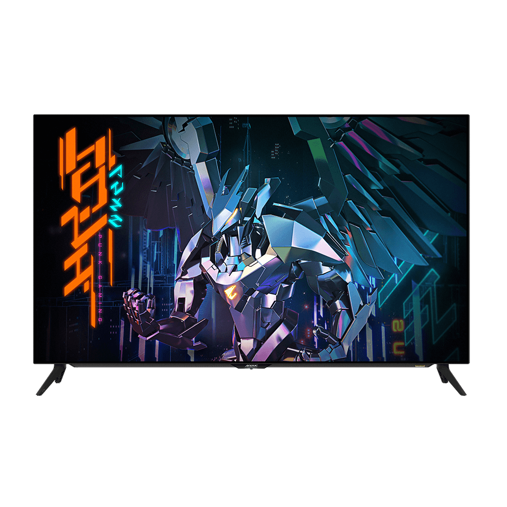

Gigabyte AORUS FO48U

Крупный 4K OLED-монитор игрового класса, рассчитанный на использование как большой настольный экран и мультимедийный дисплей.
Дополнительные фотографии
Технические характеристики
| Диагональ | 47,5 дюйма |
|---|---|
| Панель | OLED |
| Разрешение | 3840 × 2160 |
| Частота обновления | 120 Гц |
| Подключения | HDMI, DisplayPort, USB |
Сильные стороны
- Глубокий чёрный и высокий контраст OLED
- 4K при 120 Гц
- Большая рабочая область и выразительная картинка